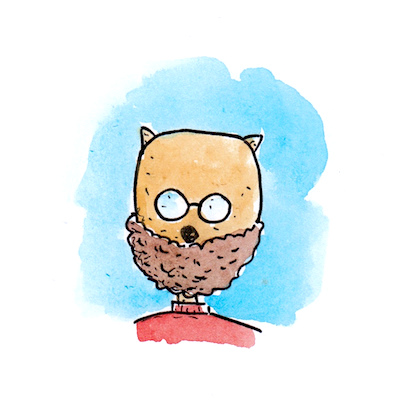

Über uns

Marc Sommerhalder kam 1981 in Schaffhausen zur Welt und schrie erstmal laut. Später wurde er ruhiger und studierte Elektrotechnik und Kulturwissenschaften. Ja, diese Kombination ist seltsam. Aber egal, weil am liebsten zeichnet und illustriert Marc sowieso Comics und Kinderbücher.

Valérie Bürgy schreibt die Texte zu Marcs Zeichnungen. Sie wurde 1979 in Freiburg i. Ue. geboren und zog zuerst mal einige Jahre durch die Welt. Später studierte sie Kulturwissenschaften und öffentliche Geschichtsvermittlung und erzählt einfach wahnsinnig gerne Geschichten aller Art.
Marc und Valérie sind auch für Schweinchen Hannes verantwortlich.